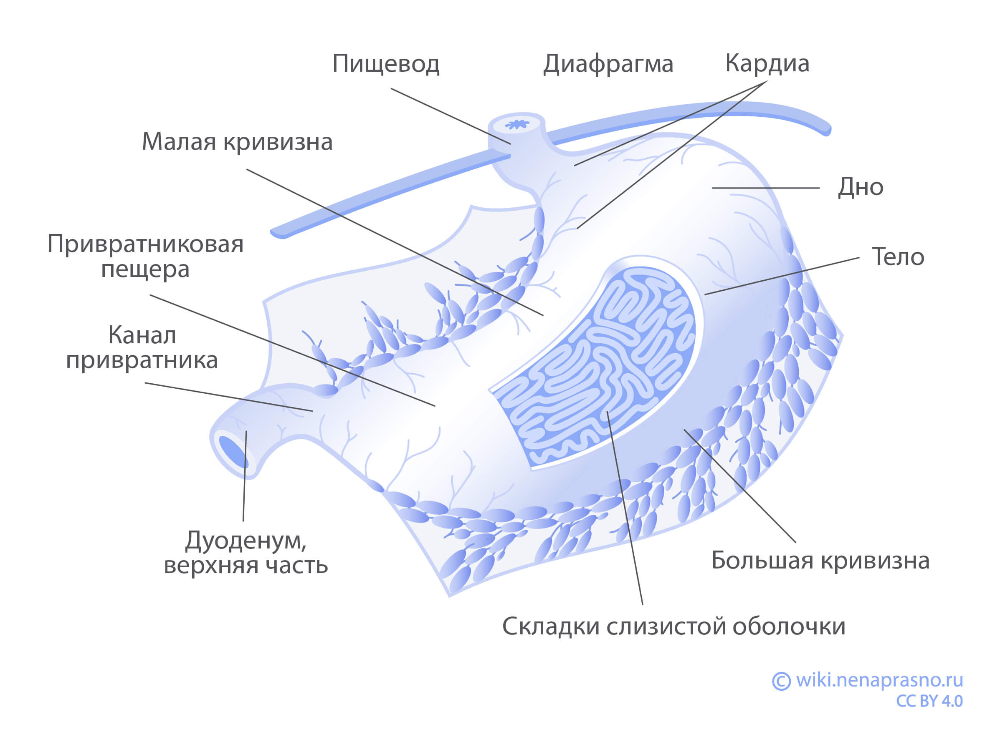

Как устроен и как работает желудок?
Из каких элементов состоит пищеварительная система?
Вся еда, которую мы потребляем, проходит через пищеварительную систему. Она состоит из множества органов и желез (слюнные железы, печень, тонкий и толстый кишечник, поджелудочная железа и др.) и имеет общую протяженность 9 метров.
Основная функция пищеварительной системы — превращение пищевых продуктов в питательные вещества и энергию, необходимые для поддержания жизни.
В пищеварительной системе можно выделить следующие элементы:
- Желудочно-кишечный тракт — извилистый канал, по которому осуществляется транспортировка пищи и всасываются питательные вещества.
- Вспомогательные органы — печень, желчный пузырь и поджелудочная железа. Они выделяют пищеварительные соки для расщепления пищи на молекулы.
- Брыжейка — представляет собой большой пласт ткани, к которому крепится кишечник. Она предотвращает перекручивание между собой петель кишки. Здесь также расположены лимфатические узлы, которые принимают участие в защите организма от бактерий.
Весь процесс пищеварения от проглатывания еды до ее выхода из организма в виде фекалий занимает от двух до пяти дней в зависимости от особенностей организма человека и состава продуктов.
Какие функции выполняет желудок?
Пищеварение представляет собой сложный физиологический процесс, в котором желудок выполняет ряд важнейших для организма функций.
Механическое и химическое переваривание пищи
Благодаря скоординированной работе мышечных волокон, которые находятся в стенке желудка, пища измельчается до кашицеобразного состояния и переходит в двенадцатиперстную кишку. При этом она смешивается с желудочным соком, который расщепляет питательные вещества на молекулы. Далее эти молекулы могут легко всасываться в кровоток и проникать в каждую отдельную клетку.
Хранение непереваренной пищи
В желудке пища может находиться до 2-3 часов. Его стенки способны растягиваться, поэтому некоторое время он может выполнять функцию склада (депо) для еды. Если желудок хирургически удален (например, при раке желудка), данная функция нарушается. В этом случае пища из пищевода напрямую поступает в двенадцатиперстную кишку. Из-за этого у пациентов могут появиться жалобы на боли в животе и быструю насыщаемость при употреблении небольшого количества пищи.
Защитная функция
Слизистая оболочка желудка является барьером для большинства микроорганизмов. Кроме того, желудок выделяет соляную кислоту, которая обладает бактерицидным свойством.
Усвоение питательных веществ
Большинство питательных веществ всасывается в тонком кишечнике, в этом отношении желудок играет незначительную роль. В нем усваиваются некоторые аминокислоты (продукты расщепления белков), частично глюкоза, вода с минеральными компонентами, некоторые лекарства и до 30% алкоголя.
Секреция гормонов и внутреннего фактора Кастла
Желудок участвует в выработке специальных веществ (гастроинтестинальных гормонов), которые регулируют выделение соляной кислоты в желудке. Клетки слизистой оболочки желудка вырабатывают также внутренний фактор Кастла. Этот белок облегчает усвоение витамина B12 в тонкой кишке, где он всасывается в кровь и таким образом участвует в кроветворении. Поэтому после операции на желудке может развиться дефицит витамина В12, который ведет к анемии (снижению уровня гемоглобина).
Из каких отделов состоит желудок?
- Наружный — серозный, покрывает желудок со всех сторон и переходит с него на соседние органы.
- Средний — мышечный, состоит из трех слоев мышц (продольных, круговых и косых).
- Внутренний — слизистая оболочка с подслизистой основой.
- Кардиальный (входной) — примыкает к пищеводу. Содержит сфинктер (круговую мышцу), “запирающий” желудок и регулирующий поступление пищи из пищевода. В кардиальном отделе находится много рецепторов, раздражение которых дает ощущение насыщения. Здесь помощью кардиального сфинктера регулируется поступление пищи из пищевода в желудок для дальнейшего переваривания. При недостаточности работы сфинктера содержимое желудка забрасывается в пищевод, что вызывает изжогу.
- Дно — расположено рядом с кардиальной частью и образует своеобразный свод. Когда в желудке происходит химическое переваривание, образуются желудочные газы, которые скапливаются в дне. Кроме того, там в течение часа может храниться непереваренная пища.
- Тело — основной отдел желудка, который находится ниже уровня дна и кардиальной части. В теле (как и в дне) располагается максимальное количество желез, выделяющих желудочный сок, поэтому здесь происходит химическое переваривание пищи.
- Пилорический (привратниковый) отдел — нижняя часть желудка, примыкающая к двенадцатиперстной кишке. Содержит сфинктер, который действует как клапан, удерживая пищевой комок в желудке, а затем порциями перемещая его в кишку. Здесь также выделяются гастроинтестинальные гормоны, регулирующие секрецию желудочного сока, и вырабатывается фактор Кастла, участвующий в кроветворении.
Выделяют следующие отделы желудка:
Тактика лечения рака желудка зависит от того, в каком отделе располагается злокачественное образование, в какие слои стенки оно проросло. Решается вопрос о возможности удаления только опухоли или только части желудка, а также о необходимости химиотерапии.
Какую функцию выполняют лимфатические узлы?
Желудок сообщается с внешней средой, в которой много чужеродных веществ и микроорганизмов. Организм от патогенов защищает не только соляная кислота, но и иммунные механизмы. В стенке желудка располагаются лимфоидные узелки, которые, связываясь с другими частями лимфатической системы, участвуют в задержании поступления в кровь токсинов и инородных частиц.
Лимфатические узлы — это скопления лимфоидной ткани, выполняющие защитную функцию, очищая организм от токсинов и вредных микроорганизмов. Именно лимфатические узлы являются первым барьером на пути распространения злокачественных клеток.
При диагностировании онкологического заболевания состояние лимфоузлов имеет большое значение. Если раковые клетки распространяются за пределы пораженного органа, обычно именно лимфатические узлы затрагиваются первыми. Наличие злокачественных клеток в лимфатических узлах меняет стадию, а значит, и прогноз заболевания.
Лимфатические узлы располагаются по малой и большой кривизне желудка и вдоль сосудов, снабжающих желудок кровью.
Выводы
- Желудок является частью пищеварительной системы, которая принимает и расщепляет пищу, поглощает питательные вещества, обезвреживает и выводит отходы из организма.
- Строение каждого отдела желудка зависит от функции, которую он выполняет.
- В зависимости от того, где располагается опухоль, в какие слои желудка она прорастает,